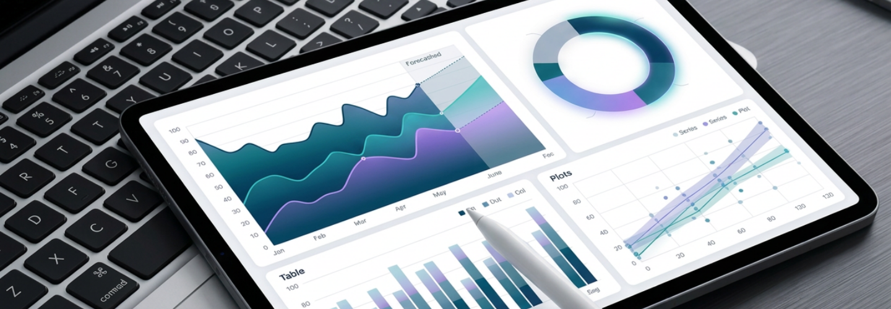

Overview
모빌리티 기업은 차량, 부품, 정비 인력 등 다양한 자원을 동시에 관리해야 합니다. 웅진은 WDMS, ERP, 메신저, HR 시스템을 연계해 자원 활용도를 높이고, 중복·결품을 줄여 비용 절감과 서비스 품질 향상을 동시에 실현합니다.
수요 예측 기반 비즈니스 혁신을 지원
웅진이 제안하는 유연한 클라우드 인프라와 빅데이터 처리 능력을 바탕으로 대규모 데이터를 신속하게 수집하고 분석할 수 있습니다. 데이터를 통합하여 실시간으로 비즈니스 인사이트를 제공합니다. 이를 통해, 기업은 시장 변동성에 신속하게 대응하고, 고도화된 수요 예측 모델을 통해 재고 최적화, 공급망 효율성 향상, 비용 절감 등을 이루며 경쟁력을 강화할 수 있습니다. 이러한 통합 접근 방식은 기업이 더욱 정확하고 예측 가능한 결정을 내리도록 도와주며, 지속 가능한 성장과 시장 리더십을 확보하는 데 핵심적인 역할을 합니다.
자원 활용의 극대화로 비용 절감
웅진의 솔루션은 기업이 보유한 자원을 최적화하여 운영 비용을 절감할 수 있도록 돕습니다. 효율적인 자원 배분과 관리를 통해 불필요한 비용을 줄이고, 생산성을 높입니다. 이를 통해 기업은 지속 가능한 성장과 경쟁력을 확보할 수 있습니다. 실시간 데이터 분석을 통해 자원 활용을 극대화하고, 효율적인 운영을 지원합니다.

Features
재고 정확도를 향상하고 공급망 효율성 증대
웅진이 제공하는 솔루션을 통해 제품, 부품 또는 원자재의 입고와 출고 과정을 관리하여 정확한 재고 추적과 관리를 통해 과잉 재고를 방지하고 필요한 재고만을 유지하여 자본을 효율적으로 사용할 수 있습니다. 생산 최적화, 비용 절감, 공급망 리스크 대응 고도화, 재고 회전율 향상, 고객 서비스 수준 향상 등 재고 관리를 통해 고객 요구에 신속하게 대응하고, 비용 효율적으로 운영을 지속할 수 있는 기반을 마련합니다.
전체 비용을 최적화하고 이익 극대화
웅진이 제공하는 BI(비즈니스 인텔리전스) 도구를 사용하여 제품의 생산 및 유통 과정에서 발생하는 비용을 정확하게 계산하고 관리함으로써 데이터 통합 및 시각화, 실시간 분석 및 모니터링, 예측 분석이 가능합니다. 이를 통해 전체 비용을 최적화하고 이익을 극대화할 수 있습니다. 또한, 원가 정보 수집, 분석, 예측 등을 통해 제조 및 서비스 제공 과정에서 발생하는 원가를 체계적으로 관리하여 비용 절감, 수익성 개선, 원가 분석 정확도 향상, 생산 프로세스 최적화가 가능하게 되어 전체 운영 효율성을 높이며, 경쟁력을 강화할 수 있습니다.
실시간 데이터 분석을 통한 전략적 의사결정 지원
웅진은 실시간 데이터를 수집, 통합, 분석하여 기업이 신속하고 정확한 의사결정을 내릴 수 있도록 지원합니다. 이 솔루션은 다양한 소스의 데이터를 실시간으로 통합하여, 경영진에게 중요한 인사이트를 제공합니다. 이를 통해 기업은 시장 변동에 빠르게 대응하고, 경쟁 우위를 확보할 수 있습니다. 예측 분석 기능을 통해 미래의 트렌드와 패턴을 예측하고, 이를 기반으로 전략적 계획을 수립할 수 있습니다. 웅진의 실시간 데이터 분석 솔루션은 운영 효율성을 극대화하고, 기업의 성장을 촉진하는 데 핵심적인 역할을 합니다. 데이터 기반의 의사결정으로 비용 절감과 수익성 향상, 고객 만족도를 극대화할 수 있습니다.